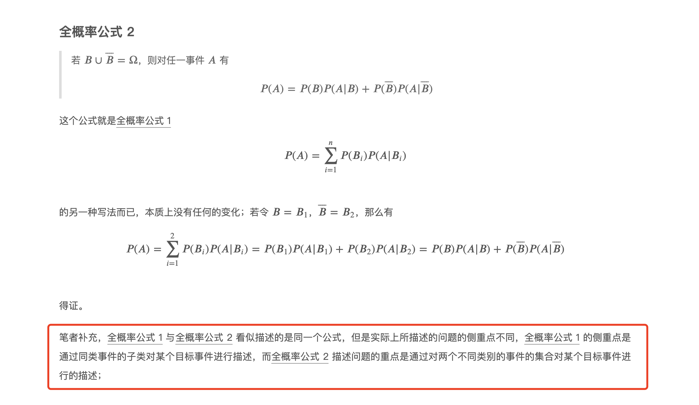
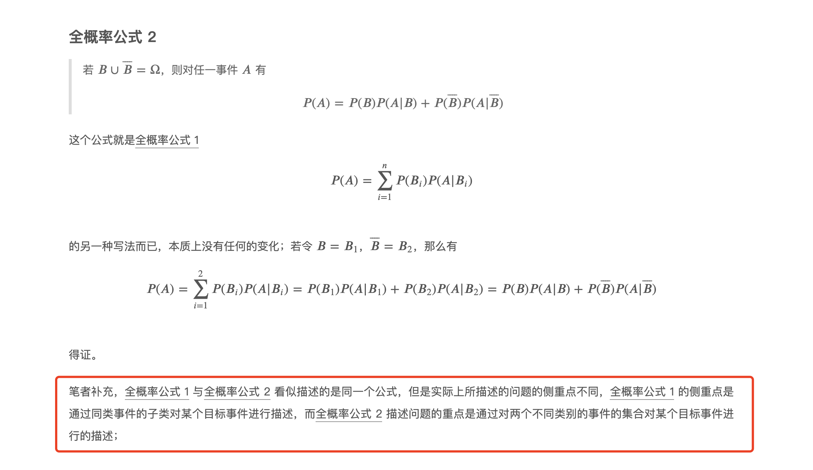

机器学习数学基础
目录
概率统计
概率核心理论

均匀分布（连续）伯努利分布（离散）二项分布（离散）多伯努利分布，分类分布（离散）多项式分布（离散） β分布（连续）Dirichlet 分布（连续）伽马分布（连续）指数分布（连续）高斯分布（连续）正态分布（连续） 卡方分布（连续）t 分布（连续）


 



核心的几种随机变量的分布以及变量之间的关系
分布的期望、方差等数字特征，了解概率密度函数和累积分布函数。对多组不同的变量，熟悉协方差以及相关性的意义和计算方法。
参数估计理论
需要重点掌握最小偏差无偏估计、最大似然估计和贝叶斯估计的相关内容。并且学习EM算法。
随机理论的相关概念
掌握蒙特卡罗方法的基本思想。同时巩固贝叶斯的思想方法，接触一下马尔科夫蒙特卡洛（MCMC）算法，找一找处理实际问题的感觉。
信息论
学习关于熵的一些理论，联合熵、条件熵、交叉熵、相对熵、互信息等概念，以及最大熵模型。 参考


随机过程初步理论和应用
首先马尔科夫链是必须学习的，了解状态转移矩阵、多步转移、几种不同的状态分类、平稳分布等最基本的内容。然后在此概念基础上，学习隐马尔科夫链的相关内容，聚焦其基本概念，以及概率计算和参数学习的一些方法。
时间序列分析
重点是移动平均、相关性以及预测等内容。
线性代数
矩阵基本计算


行列式


矩阵的逆矩阵


矩阵求导